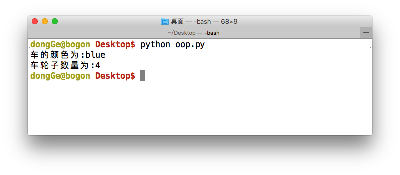
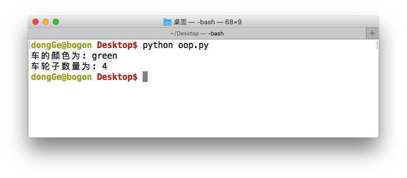

构造
想一想:
在上一小节的demo中，Car类有2个属性，wheelNum（车的轮子数量）以及color（车的颜色）都有默认的数据，试想自行车的轮子数为2个这是合适的，但是汽车的话一般最少数也是4个，所以如果成员变量的默认数据应该根据具体创建的车的类型而定 是最理想的，那么有没有办法能够在创建对象的时候，就顺便把这些成员变量给设置为合适的数据呢？
答:
"构造器"方法
<1>构造器方法的格式
"构造器"方法，的格式如下:
def __init__():
<2>构造器方法调用
在Car类中添加 "构造器"方法:
# 定义类
class Car:
# 构造器方法
def __init__(self):
self.wheelNum = 4
self.color = 'blue'
# 方法
def run(self):
print '车在跑，目标:夏威夷'
# 创建对象
BMW = Car()
print('车的颜色为:%s'%BMW.color)
print('车轮子数量为:%d'%BMW.wheelNum)

小总结
通过上面的列子能够看到，当创建完Car类型的对象后，对象BMW对象的成员变量wheelNum和color都发生了变化，因此
__init__()方法是在创建对象后，被默认执行了
想一想:
既然在创建完对象后
__init__()方法已经被默认的执行了，那么能否让对象在默认调用__init__()方法的时候传递一些参数呢？如果可以，那怎样传递呢？
# 定义类
class Car:
# 构造器方法
def __init__(self, newWheelNum, newColor):
self.wheelNum = newWheelNum
self.color = newColor
# 方法
def run(self):
print '车在跑，目标:夏威夷'
# 创建对象
BMW = Car(4, 'green')
print '车的颜色为:',BMW.color
print '车轮子数量为:',BMW.wheelNum

<3>总结
- 构造器方法，在创建一个对象时默认被调用，不需要手动调用